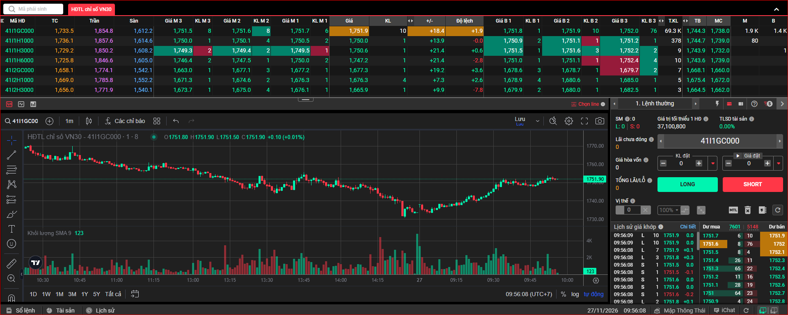
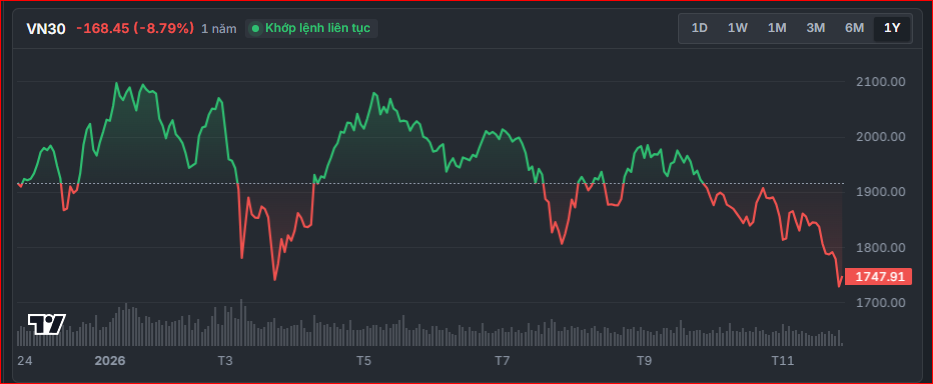
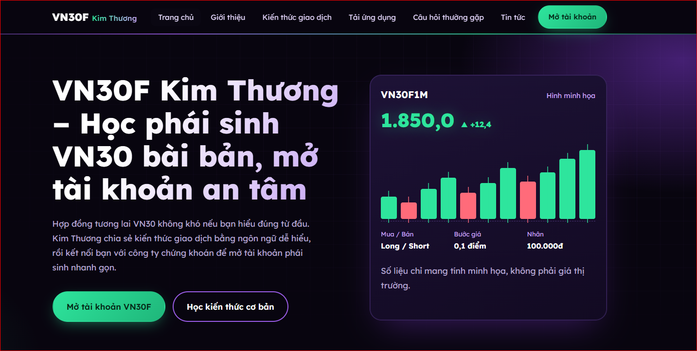

Chứng khoán phái sinh là một bộ phận của thị trường tài chính, cho phép các bên tham gia thỏa thuận về giá trị của một tài sản cơ sở trong tương lai. Tại Việt Nam, thị trường này được biết đến nhiều nhất thông qua hợp đồng tương lai chỉ số VN30. Để hiểu rõ cách thị trường vận hành, người mới cần nắm được đặc điểm sản phẩm, cơ chế định giá và những rủi ro liên quan.
Chứng khoán phái sinh là gì?

Chứng khoán phái sinh là những công cụ tài chính được hình thành dựa trên giá trị của một tài sản cơ sở. Tài sản này có thể là cổ phiếu, chỉ số chứng khoán, hàng hóa, lãi suất hoặc một loại tài sản tài chính khác.
Hiểu đơn giản, thay vì trực tiếp sở hữu tài sản cơ sở, các bên tham gia ký kết một hợp đồng có giá trị thay đổi theo biến động của tài sản đó. Hợp đồng sẽ quy định những điều khoản như giá thực hiện, thời hạn và phương thức thanh toán.
Điểm khác biệt của chứng khoán phái sinh so với cổ phiếu thông thường là giá trị hợp đồng phụ thuộc vào tài sản tham chiếu. Một số sản phẩm còn có cơ chế ký quỹ và thanh toán lãi lỗ theo ngày, khiến mức độ rủi ro cần được đánh giá cẩn thận.
Các loại chứng khoán phái sinh ở Việt Nam hiện nay
Thị trường chứng khoán phái sinh Việt Nam được tổ chức theo quy định pháp luật và có các sản phẩm được niêm yết, giao dịch trên hệ thống sở giao dịch chứng khoán. Những nhóm sản phẩm quan trọng gồm:
Hợp đồng tương lai
Hợp đồng tương lai là thỏa thuận giữa các bên về việc mua hoặc bán tài sản cơ sở theo những điều khoản được chuẩn hóa. Các thông tin như quy mô hợp đồng, tháng đáo hạn và phương thức thanh toán được quy định cụ thể.
Tại Việt Nam, hợp đồng tương lai chỉ số VN30 và hợp đồng tương lai trái phiếu Chính phủ là những sản phẩm tiêu biểu từng được triển khai. Tình trạng niêm yết và giao dịch của từng sản phẩm cần được kiểm tra tại sở giao dịch.
Hợp đồng quyền chọn
Hợp đồng quyền chọn trao cho người mua quyền, nhưng không bắt buộc, mua hoặc bán tài sản cơ sở theo mức giá xác định trong một khoảng thời gian nhất định hoặc tại thời điểm đáo hạn. Người mua thường phải trả một khoản phí quyền chọn để có được quyền này.
Hợp đồng kỳ hạn và hợp đồng hoán đổi
Hợp đồng kỳ hạn là thỏa thuận riêng giữa các bên về việc giao dịch tài sản trong tương lai theo mức giá đã xác định. Trong khi đó, hợp đồng hoán đổi cho phép các bên trao đổi dòng tiền hoặc nghĩa vụ tài chính theo những điều kiện đã thỏa thuận.
Đây là những công cụ phổ biến trên thị trường tài chính quốc tế, nhưng không nên nhầm lẫn chúng với các sản phẩm chứng khoán phái sinh đang được niêm yết trên thị trường chứng khoán Việt Nam.
Cách chơi chứng khoán phái sinh và cơ chế vận hành

Khi tìm hiểu cách vận hành của chứng khoán phái sinh, người mới nên bắt đầu từ những khái niệm nền tảng thay vì chỉ tập trung vào biến động giá. Mỗi sản phẩm có quy định riêng về hợp đồng, ký quỹ, thời hạn và phương thức thanh toán.
Hiểu về vị thế mua và vị thế bán
Trong các hợp đồng tương lai, vị thế mua (Long) thể hiện cam kết mua theo hợp đồng, còn vị thế bán (Short) thể hiện cam kết bán theo hợp đồng. Giá trị của hai vị thế thay đổi theo diễn biến của tài sản cơ sở và điều khoản hợp đồng.
Tìm hiểu cơ chế ký quỹ
Ký quỹ là khoản tiền hoặc tài sản được yêu cầu để bảo đảm nghĩa vụ hợp đồng. Cơ chế này giúp hệ thống quản lý rủi ro thanh toán, nhưng cũng khiến người tham gia phải đặc biệt chú ý đến biến động giá và khả năng phát sinh nghĩa vụ tài chính.
Thanh toán và thời hạn hợp đồng
Mỗi hợp đồng đều có thời điểm đáo hạn và phương thức thanh toán cụ thể. Với hợp đồng tương lai chỉ số, việc thanh toán khi đáo hạn thường được thực hiện bằng tiền theo quy định của sản phẩm.
Những yếu tố ảnh hưởng đến giá chứng khoán phái sinh
Giá chứng khoán phái sinh chịu tác động từ nhiều yếu tố, trong đó quan trọng nhất là diễn biến của tài sản cơ sở. Đối với hợp đồng tương lai chỉ số, một số yếu tố đáng chú ý gồm:
Biến động của thị trường cơ sở
Khi các cổ phiếu có tỷ trọng lớn trong chỉ số biến động, giá trị chỉ số cũng có thể thay đổi đáng kể. Đây là yếu tố quan trọng đối với các hợp đồng tương lai lấy chỉ số làm tài sản cơ sở.
Lãi suất và kỳ vọng thị trường
Mặt bằng lãi suất, kỳ vọng kinh tế và chính sách tiền tệ có thể ảnh hưởng đến định giá tài sản tài chính. Những thay đổi trong kỳ vọng của nhà đầu tư cũng tác động đến cung cầu trên thị trường phái sinh.
Cung cầu và tâm lý nhà đầu tư
Thanh khoản, khối lượng giao dịch, hoạt động của các nhóm nhà đầu tư và tâm lý thị trường có thể khiến giá hợp đồng biến động trong ngắn hạn.
Thời gian đáo hạn và basis
Basis là mức chênh lệch giữa giá hợp đồng tương lai và giá trị của tài sản cơ sở. Khi thời gian đáo hạn đến gần, mối quan hệ giữa hai mức giá có thể thay đổi. Đây là một chỉ tiêu quan trọng khi nghiên cứu thị trường.
Chứng khoán phái sinh chỉ số VN30 là gì?

Hợp đồng tương lai VN30 là sản phẩm chứng khoán phái sinh có tài sản cơ sở là chỉ số VN30. Chỉ số này đại diện cho nhóm cổ phiếu có vốn hóa và thanh khoản lớn trên Sở Giao dịch Chứng khoán TP.HCM (HOSE).
Sản phẩm thường được ký hiệu là VN30F, đi kèm các ký tự thể hiện tháng và năm đáo hạn. Hợp đồng được chuẩn hóa về quy mô, bước giá, thời gian giao dịch và phương thức thanh toán.
Người đọc có thể tìm hiểu sâu hơn về đặc điểm sản phẩm ại bài viết Hợp đồng tương lai VN30 .
Đặc điểm cần biết về hợp đồng tương lai VN30
- Tài sản cơ sở là chỉ số VN30.
- Hợp đồng có thời hạn và ngày đáo hạn cụ thể.
- Giao dịch theo quy chuẩn do sở giao dịch ban hành.
- Có cơ chế ký quỹ và thanh toán lãi lỗ theo quy định.
- Giá hợp đồng có thể khác với giá trị chỉ số cơ sở.
Mối quan hệ giữa VN30 và hợp đồng tương lai VN30
Chỉ số VN30 phản ánh diễn biến của nhóm cổ phiếu thành phần, trong khi hợp đồng tương lai VN30 thể hiện mức giá được thị trường kỳ vọng đối với chỉ số tại thời điểm trong tương lai. Vì vậy, hai mức giá có mối liên hệ chặt chẽ nhưng không nhất thiết luôn bằng nhau.
Lời khuyên cho người mới tìm hiểu hợp đồng tương lai VN30
Hợp đồng tương lai VN30 có cấu trúc phức tạp hơn nhiều so với việc mua bán cổ phiếu thông thường. Vì vậy, người mới nên dành thời gian nghiên cứu kiến thức trước khi đưa ra bất kỳ quyết định tài chính nào.
- Tìm hiểu cách tính điểm chỉ số VN30 và vai trò của các cổ phiếu thành phần.
- Nắm rõ khái niệm hợp đồng, ký quỹ, basis và ngày đáo hạn.
- Đọc kỹ quy định giao dịch và các loại chi phí liên quan đến sản phẩm.
- Tìm hiểu những tình huống biến động mạnh của thị trường và nguy cơ phát sinh thua lỗ.
- Không sử dụng tiền vay hoặc tiền dành cho các nhu cầu thiết yếu để tham gia những sản phẩm tài chính có rủi ro cao.
Điều quan trọng là không nên coi phái sinh như một phương thức kiếm tiền nhanh. Kiến thức, khả năng đánh giá rủi ro và sự hiểu biết về cơ chế thị trường luôn cần được đặt lên hàng đầu.
Đâu là nền tảng để bạn bắt đầu tìm hiểu chứng khoán phái sinh?

Đối với người mới, việc lựa chọn một nguồn thông tin có nội dung rõ ràng và dễ tiếp cận là bước quan trọng trong quá trình học hỏi về thị trường tài chính. Thay vì chỉ theo dõi biến động giá, người đọc nên xây dựng kiến thức từ những khái niệm cơ bản.
VN30F Kim Thương là website cung cấp kiến thức về thị trường chứng khoán, tập trung vào chỉ số VN30 và hợp đồng tương lai. Nội dung được định hướng theo cách trình bày dễ hiểu, giúp người đọc tiếp cận các khái niệm như chỉ số, thanh khoản, basis, hợp đồng và cơ chế thị trường.
Bên cạnh nội dung kiến thức, website còn cung cấp thông tin kết nối đến ứng dụng do đơn vị thứ ba cung cấp, phục vụ nhu cầu tìm hiểu về các dịch vụ chứng khoán. Người đọc nên tự kiểm tra tư cách pháp lý, độ tin cậy, điều khoản sử dụng và thông tin của đơn vị cung cấp trước khi chia sẻ dữ liệu cá nhân hoặc thực hiện bất kỳ thủ tục tài chính nào.
Mục tiêu của việc học về chứng khoán phái sinh không chỉ là hiểu cách thị trường biến động, mà còn là nhận diện được những rủi ro và giới hạn của từng sản phẩm tài chính.
Kết luận
Chứng khoán phái sinh là một lĩnh vực quan trọng của thị trường tài chính hiện đại, với nhiều sản phẩm và cơ chế hoạt động khác nhau. Tại Việt Nam, hợp đồng tương lai chỉ số VN30 là sản phẩm tiêu biểu, thu hút sự quan tâm của nhiều người theo dõi thị trường.
Để hiểu đúng về lĩnh vực này, người mới cần tìm hiểu tài sản cơ sở, đặc điểm hợp đồng, cơ chế ký quỹ, thanh toán và các yếu tố tác động đến giá. Việc trang bị kiến thức đầy đủ sẽ giúp mỗi người có góc nhìn khách quan hơn về thị trường và những rủi ro tài chính có thể phát sinh.
Cảnh báo rủi ro: giao dịch phái sinh có đòn bẩy cao và có thể gây thua lỗ vượt quá vốn ký quỹ. Nội dung bài viết chỉ mang tính tham khảo và giáo dục, không phải khuyến nghị đầu tư.